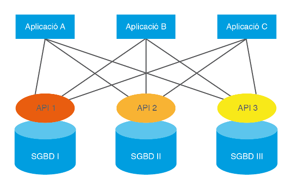

3.1 - ODBC
A mida que les teories de dades relacionals anaven agafant força i les xarxes guanyaven adeptes gràcies a l’increment de l’eficiència a preus realment competitius, van començar a implementar-se uns Sistemes Gestors de Bases de Dades basats en la tecnologia client-servidor, que van triomfar.

La tecnologia client-servidor va permetre aïllar les dades i els programes específics d’accés a aquestes dades, del desenvolupament de l’aplicació. La raó principal d’aquesta divisió va ser segurament possibilitar l’accés remot a les dades de qualsevol ordinador connectat a la xarxa. El cert, però, és que aquest fet va empènyer els sistemes de bases de dades a desenvolupar-se d’una forma aïllada i a crear protocols i llenguatges específics per poder-se comunicar remotament amb les aplicacions que corrien en els clients. Per dir-lo d'alguna manera, havien de desenvolupar els servidors i també els clients, per a poder connectar-se amb el servidor.
A poc a poc, el software al voltant de les bases de dades va créixer espectacularment intentant donar resposta a un màxim de demandes a través de sistemes altament configurables. És el que avui dia es coneix com a middleware o capa intermèdia de persistència. És a dir, el conjunt d’aplicacions, utilitats, biblioteques, protocols i llenguatges, situats tant a la part servidor com a la part client, que permeten connectar-se remotament a una base de dades per configurar-la o explotar-ne les seues dades.
L'arribada dels estàndards
Inicialment, cada empresa desenvolupadora d’un SGBD implementava les seues solucions específiques per al seu sistema, però prompte es van donar compte que col·laborant conjuntament podien treure’n major rendiment i avançar molt més ràpidament.
Sostenint-se en el Model Relacional i en algunes implementacions primerenques de les empreses IBM i Oracle, es va desenvolupar el llenguatge de consulta de dades anomenat SQL (Structured Query Language). Va ser un gran pas endavant, perquè s'uniformava la manera d'accedir a la BD, però les aplicacions necessitaven API amb funcions que permeteren fer crides des del llenguatge de desenvolupament per enviar les consultes SQL.

Cada SGBD té la seua pròpia connexió i el seu propi API.
El grup anomenat SQL Access Group, en el qual participaven prestigioses empreses del sector com Oracle, Informix, Ingres, DEC, Sun o HP, va definir un API universal amb independència del llenguatge de desenvolupament i la Base de Dades a connectar.
El 1992, Microsoft i Simba implementen l’ODBC (Open Data Base Connectivity), un API basat en la definició del SQL Acces Group, que s’integra en el sistema operatiu de Windows i que permet afegir múltiples connectors (o controladors o Drivers) a diverses Bases de Dades Relacionals (que utilitzen SQL) de forma molt senzilla i transparent, ja que els connectors són autoinstal·lables i totalment configurables des de les mateixes eines del Sistema Operatiu. D'aquesta manera, tenint instal·lat ODBC (i en Windows acabarà venint instal·lat per defecte), les aplicacions es connectaran a través d'ODBC a qualsevol dels SGBD del qual tinguem instal·lat el connector. Per a connectar a una Base de Dades o una altra, només hem de canviar de connector, sense haver de canviar la pròpia aplicació.
L’arribada de l’ODBC va representar un pas sense precedents en el camí cap a la interoperabilitat entre bases de dades i llenguatges de programació. La majoria d’empreses desenvolupadores de Sistemes Gestors de Bases de Dades van proporcionar els drivers de connectivitat, i els llenguatges de programació més importants van desenvolupar biblioteques específiques per suportar l’API ODBC.
La situació actual
Actualment, ODBC continua sent una adequada manera de connectar als SGDB Relacionals. El seu desenvolupament segueix liderat per Microsoft, però existeixen versions per a altres Sistemes Operatius com UNIX/LINUX o MAC. Els llenguatges més populars de desenvolupament mantenen actualitzades les biblioteques de comunicació amb les successives versions que han anat apareixent i la majoria de SGBD disposen d’un controlador ODBC bàsic. I per tant la connexió queda garantida.
Actualment, l’ODBC s’estructura en tres nivells. El primer, anomenat core API, és el nivell més bàsic corresponent a l’especificació original (basada en el SQL Access Group). El Level 1 API i el Level 2 API afegeixen funcionalitats avançades, com cridades a procediments guardats en el Sistema Gestor de Bases de Dades, aspectes de seguretat d’accés, definició de tipus estructurats, etc.
En realitat, l’ODBC és una especificació de baix nivell, és a dir, de funcions bàsiques que possibiliten la connexió, que asseguren l’atomicitat de les peticions, el retorn d’informació, el capsulament del llenguatge de consulta SQL o l’obtenció de dades aconseguides en resposta a un petició.
La funcionalitat de baix nivell fa que es puga adaptar a moltes aplicacions; això sí, a costa d’un considerable nombre de línies de codi necessàries per adaptar-se a la lògica de cada aplicació. És per això que sobre la base de l’ODBC han sorgit altres alternatives de persistència de més alt nivell. Per exemple, Microsoft ha desenvolupat OLE DB o ADO.NET. Aquest últim possibilita ja els objectes per a qualsevol tipus d’aplicació basada en la plataforma .NET.
Llicenciat sota la Llicència Creative Commons Reconeixement CompartirIgual 2.5